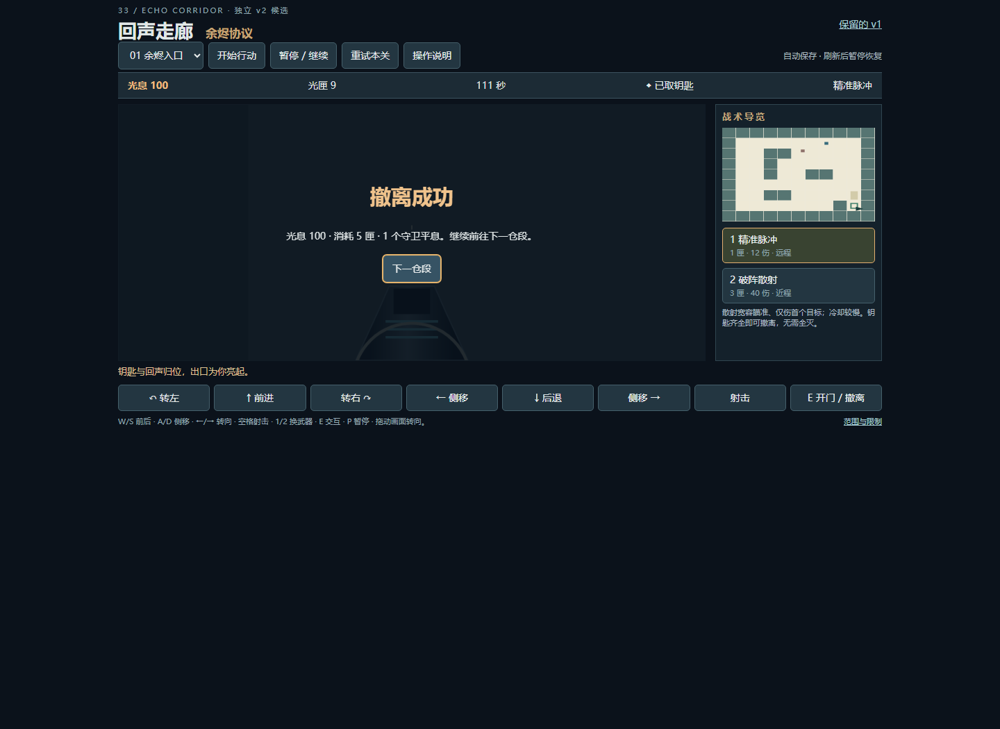
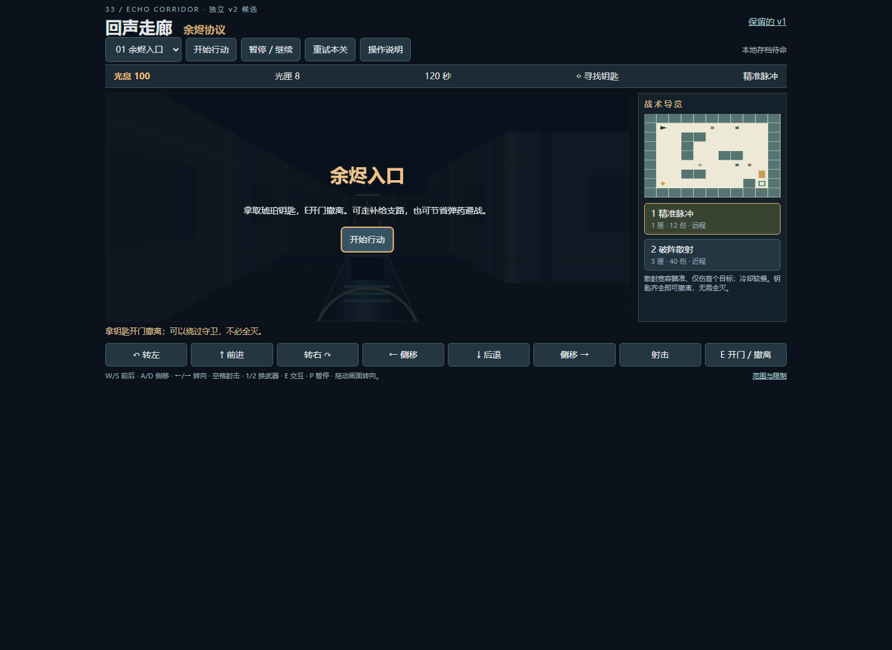
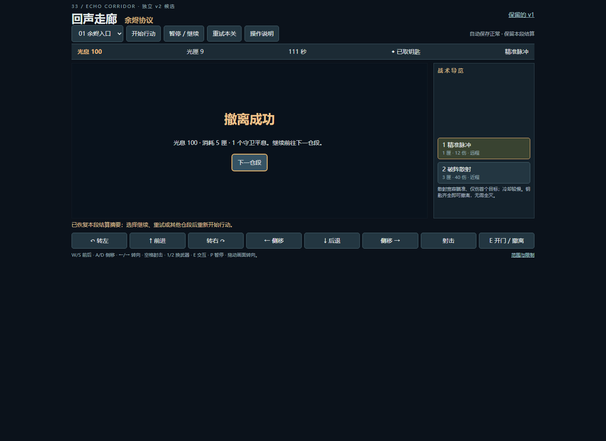
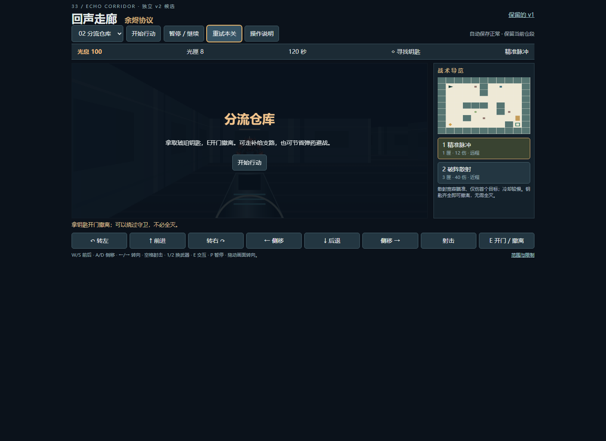
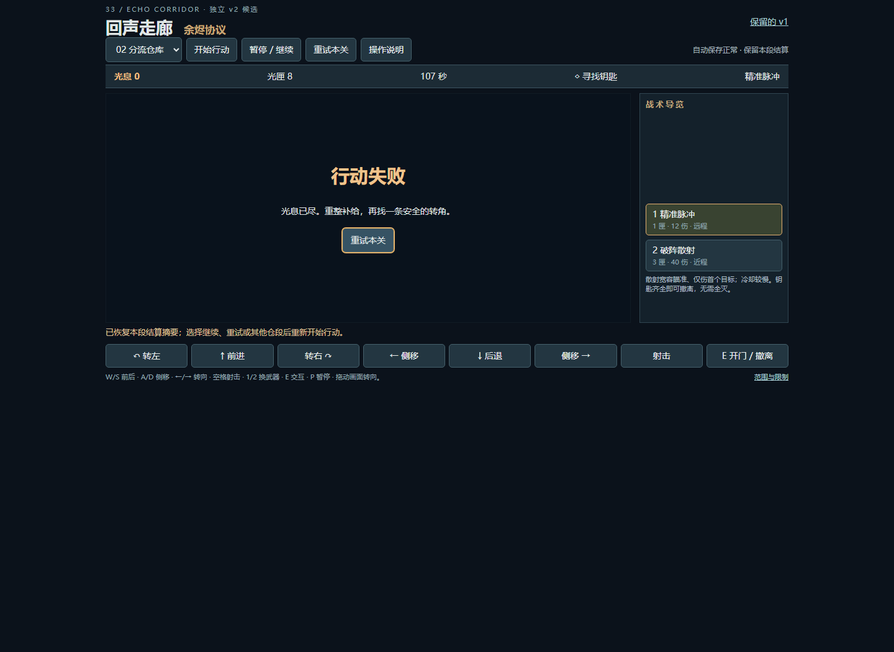
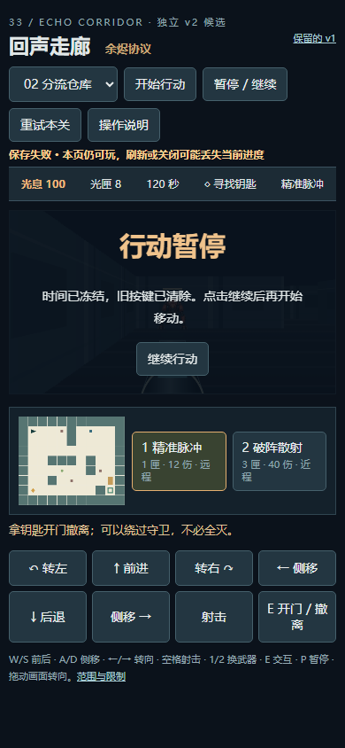
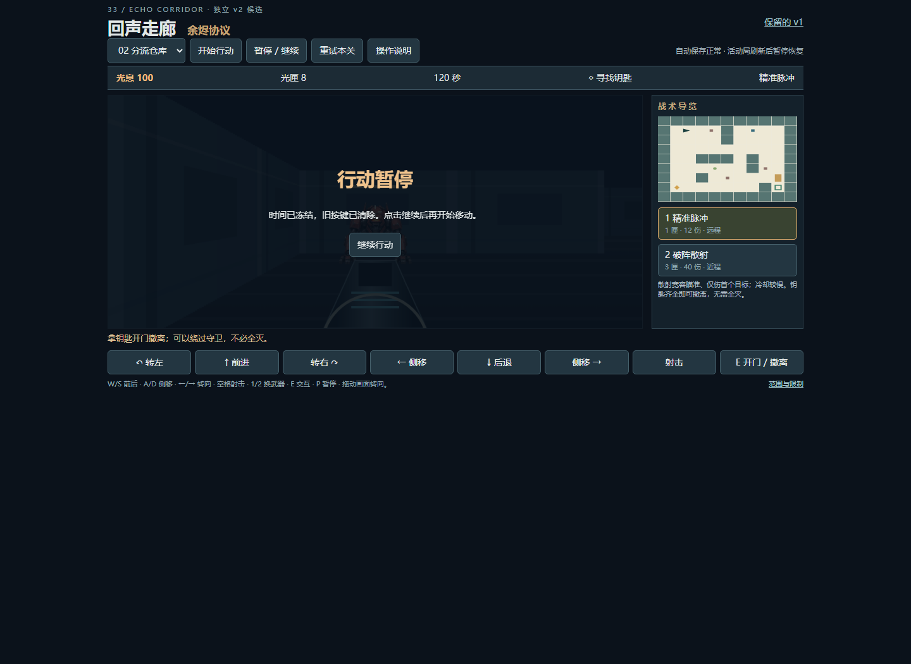
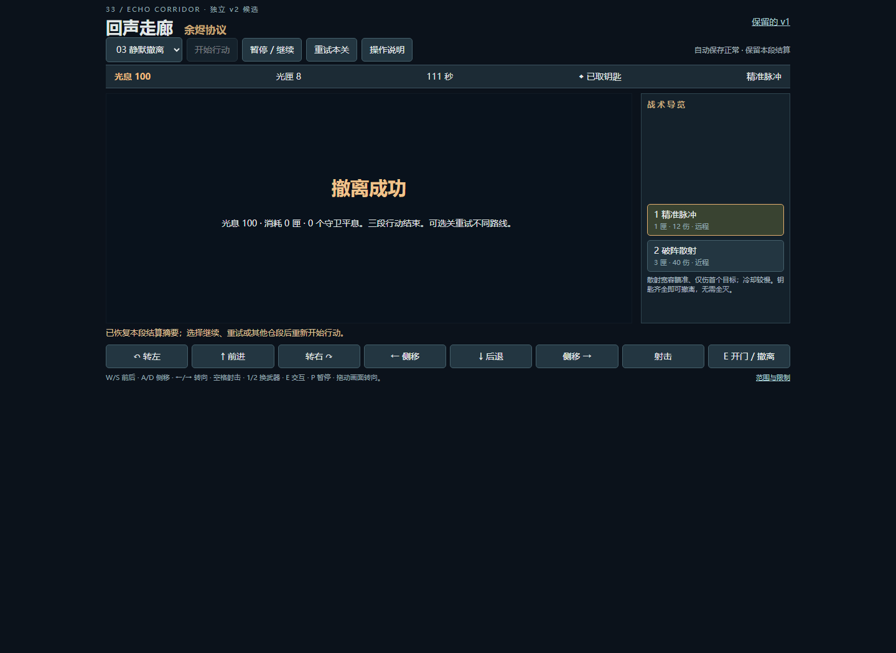

打开回声走廊 v2 · 游戏图鉴关段与结算，刷新后接得上
2026-10-20。只补关段/结果连续性。活动局仍用原引擎重放、刷新先暂停；准备态保留当前段；终态只恢复校验后的结算摘要，不伪造终点战场。旧会话只读迁移到独立新键，坏档保全、写失败警告和后续恢复成功分开。
正常UI实玩：首段撤离→结算刷新→第二段准备/活动局刷新→自然战斗失败→失败刷新→本段重试。第三段无第四段、旧档迁移、坏档及写失败用明确夹具或故障注入单列，不能当作自然第三段通关。
15组单元/控制器、3组正常UI链路与4组夹具通过。after来自本地候选，before来自公开旧站；公开部署复验以最终交付回执为准。
完整方法与未验范围 · 本地浏览器原报告 · 旧站正常复现 · 单元/控制器 · 离线核对 · 保全策略
旧版 · 正常撤离
旧版 · 刷新丢失结算
修复后 · 正常首胜刷新保留摘要
修复后 · 第二段准备刷新
修复后 · 第二段自然失败刷新
故障注入 · 390宽度写失败提示
迁移夹具 · 保留旧raw
终态夹具 · 第三段无第四段（非自然通关）
未验全三段自然通关、真机触屏、真实设备配额/权限、长期保存、声音与审美。以上均为原生页面截图，没有重绘、拼接或把素材当作实玩帧。